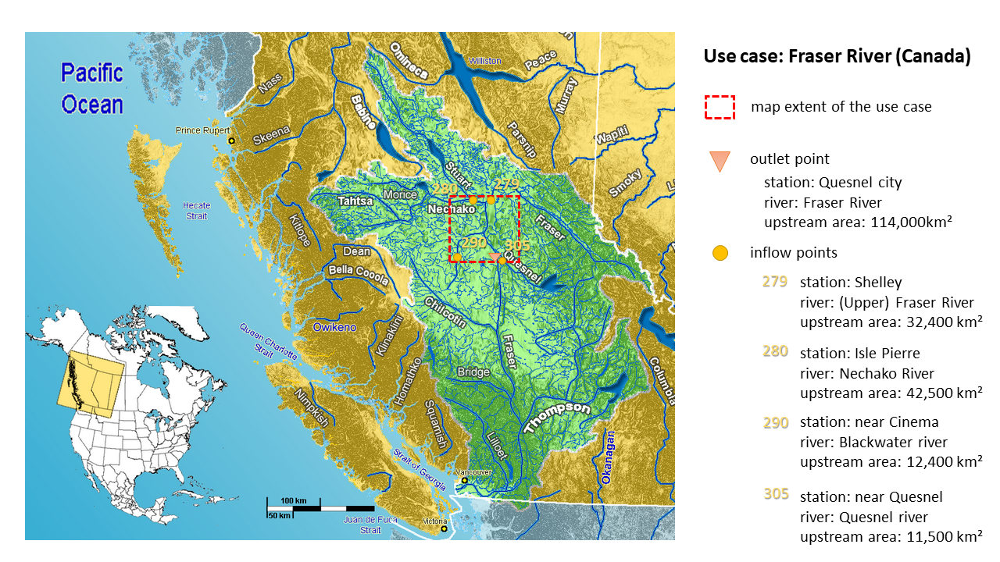
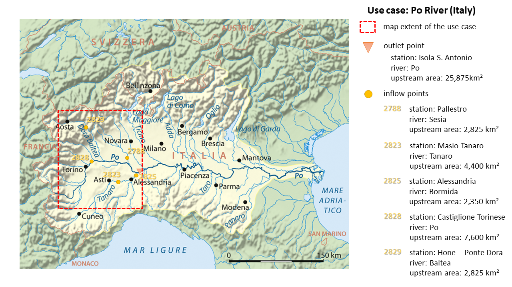

Other use cases#
The lisflood-usecases repository includes two more use cases. The purpose of those use cases is for you to get kick-started with LISFLOOD as well as to give you the opportunity to verify that the model is running correctly on your PC.
We have prepared for each of the two use cases all the static input maps, the meteorological forcings and the LISFLOOD setting files. Once you have downloaded and installed the LISFLOOD model on your own PC, we recommend you to download also one (or both) of the use cases and run it (them) as a test on your PC. In order for you to know that everything has worked correctly we have uploaded the reference output file. If everything has worked correctly, the time series of discharge values of your output file is identical to the time series of discharge values of the reference file.
Moreover, a Jupyter Notebook has been developed to show the functioning of LISFLOOD without the need of installing anything on the users’ computer. A description of the Jupyter notebook is provided below.
1 Running LISFLOOD-OS on your PC#
Use case 1: Fraser River, British Columbia, Canada#
The first use case is located in West Canada, in a basin called Fraser. The Fraser River rises at Fraser Pass near Blackrock Mountain in the Rocky Mountains and discharges into the Pacific Ocean at the city of Vancouver. With its 1,375 km length, it is the longest river within British Columbia and the 11th longest river in Canada. The basin size is about 220,000 km2, while the annual discharge at its mouth is 3,550 m3.

For testing the LISFLOOD code we prepared all the required input (maps) for a subsection of the Fraser basin (see red dashed box in Figure above). The maps cover the river section from the Nechako tributary in the North till the Quesnel tributary in the South. The outlet point of our test case is located on the main Fraser river at the height of the Quesnel city and has an upstream area of 114,00 km2. As our subsection covers only a relatively small portion of the outlet’s upstream catchment, four inlet points have been implemented (called Shelley, Isle Pierre, near Cinema and near Quesnel) accounting for the discharge (of the Upper Fraser, Nechako, Blackwater and Quesnel river respectively) prior to “inflowing” into our map area.
As this is a use case from our global setup, all input maps are in the geographical system WGS84, with latitude and longitude. The map extent is 52.6o to 54o North and -121.4o to -124.5o West, with a horizontal resolution of 0.1 degree. The standard map format is netCDF.
Use case 2: Po River, Italy#
The second use case is located in North Italy, in the Po River Basin. Its source is at Monte Viso in Piemonte (Italy) at about 3,700 m; from there it flows 652 km eastwards till it flows into the Adriatic Sea close to Venice. The whole basin covers about 74,000 km², of which 70,000 km² are on Italian territory, and the remaining are shared between France and Switzerland.

Also for this use case we have selected only a portion of the whole river basin. You can see the selected area in the map above as it is outlined with a red dashed box. It includes a large part of the Upper Po River basin till the outlet at Pieve del Cairo on the main Po River. The area upstream of the outlet is 25,875 km². However, as not all of the very upstream sections are fully included in the map extent (you see that some are outside of the red box) five inflow points were defined (see map). At those locations a pre-calculated discharge time series will be used that accounts also for all the upstream areas.
As this use case is from our European setup, all the input maps are in the SPIRE compliant ETRS89 Lambert Azimuthal Equal Area Coordinate Reference System (ETRS-LAEA). The extent of the prepared input maps for this use case is 2535000 (top), 4095000 (left), 4230000 (right) and 2380000 (bottom). The horizontal resolution is 5 km and the standard map format is netCDF.
2 Running LISFLOOD-OS on a Jupyter Notebook #
A Jupyter Notebook was developed to show the functioning of LISFLOOD without the need of installing anything on the users’ computer. The notebook can be accessed by simply clicking on the button “launch binder” on top of the repository’s README file. It allows the user to familiarize with LISFLOOD settings, parameters, processing protocol, and output variables by simply interacting with the graphic interface of the notebook.
When opening the notebook with Binder, the code cells are folded. Conversely, the code can be visualized by clicking on the respective small arrow on the left. The users can test the functioning of LISFLOOD by using the standard Jupyter Notebook commands.
The Processing code cell creates an interactive interface where the users can select (i) the settings files, (ii) the temporal interval for the simulation, (iii) the hydrological modules, (iv) the values of the parameters, and (v) the output variables.
The simulation can then be performed by simply clicking on the “Start processing” button.
The results are visualized by the Outputs code cell.
The notebook can also be used for data visualization of previous LISFLOOD runs. When running the Outputs code cell, the notebook checks whether the Processing code cell has been executed before. If yes, it opens the output files coming from this LISFLOOD run. If not, it opens another file chooser where the users can choose the output folder that they would like to visualize.
Note: users are recommended to test the functioning of the Jupiter notebook by running the Fraser case (LF_lat_lon_UseCase).
Prerun settings: lisfloodSettings_reference_PreRun.xml
Run settings: lisfloodSettings_reference_Run.xml